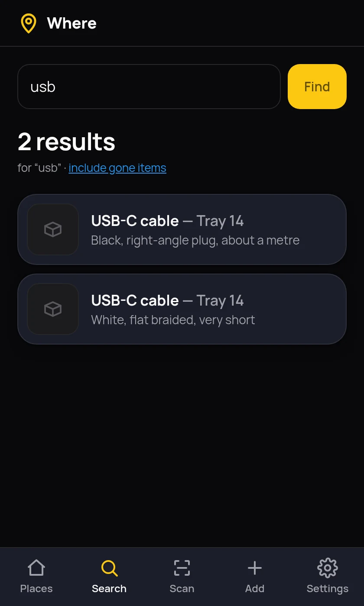
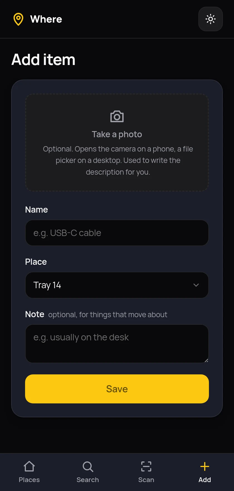
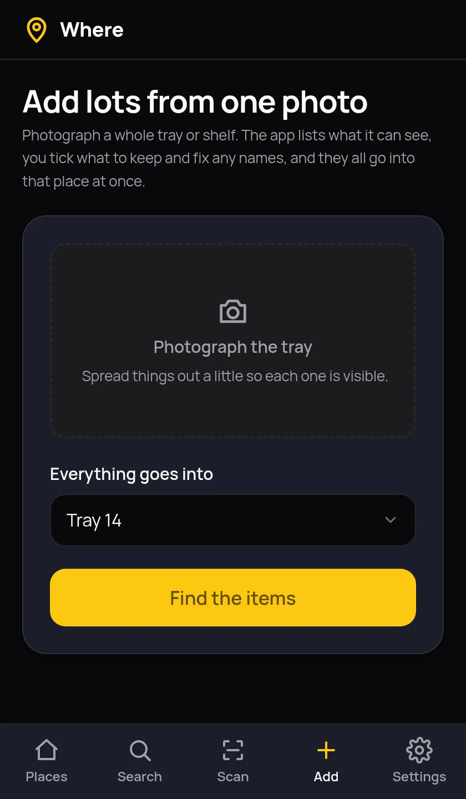
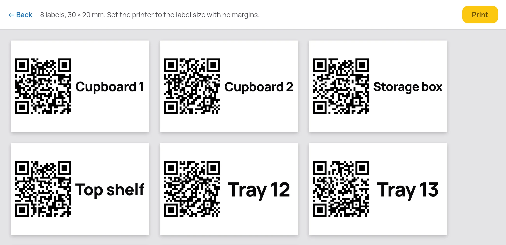
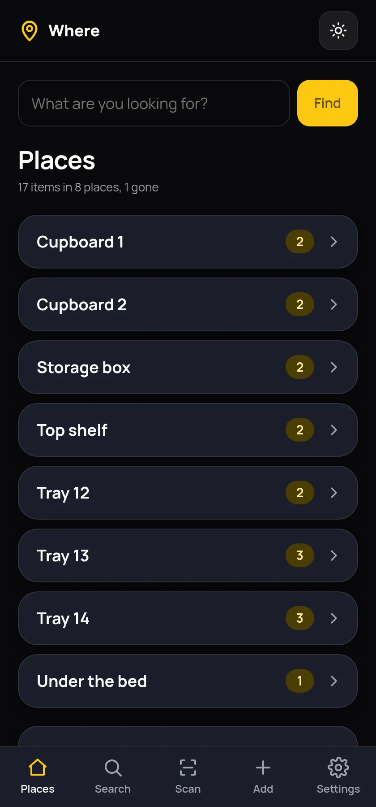
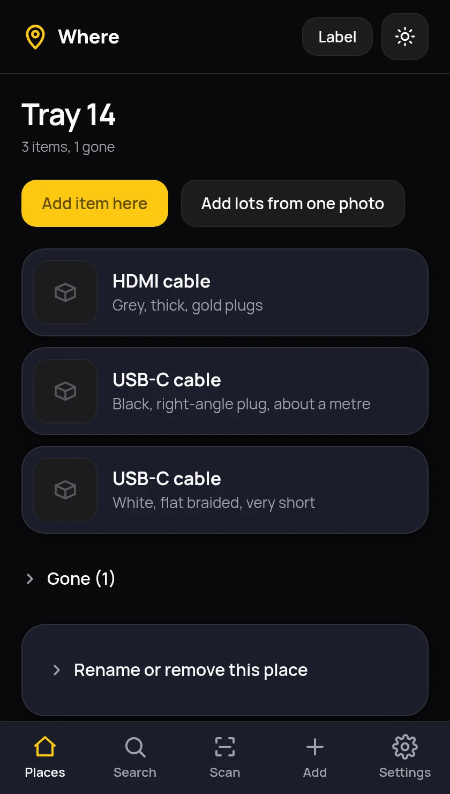
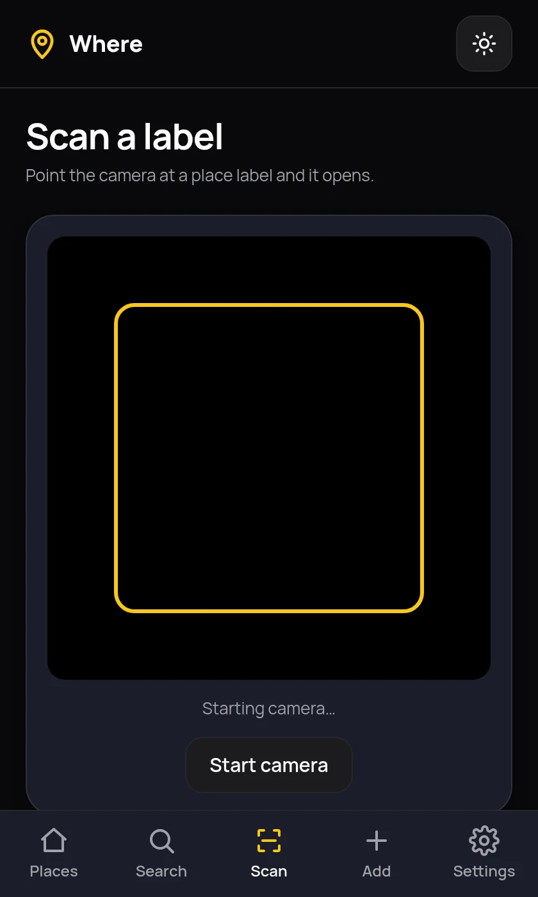
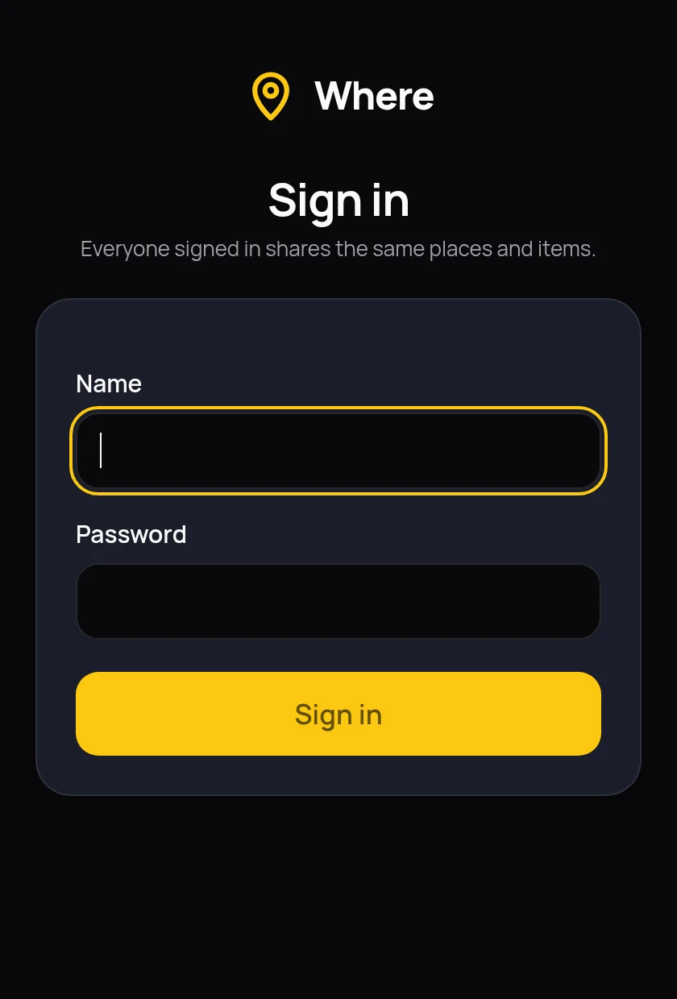
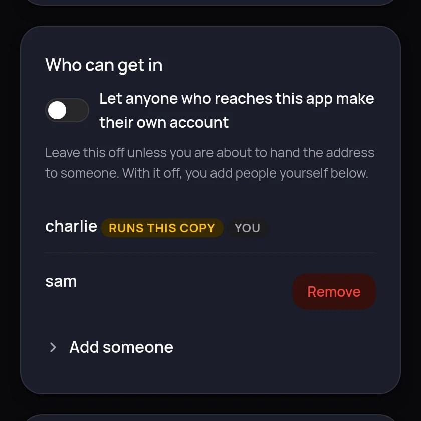

Which cupboard was that in?
Where is a small app for your own server that answers one question. Take a photograph, type what the thing is, choose the place it lives, and stop digging through the storage box. Searching gives you the plain answer: USB-C cable — Tray 14.
Free under the GPL. No account, no cloud, nothing to pay.

The description writes itself
Most homes hold a dozen near-identical things. Typing “USB-C cable” fifteen times tells you nothing later. So you type the name and the photograph supplies the difference: black, right-angle plug, about a metre.
That is done by a vision model running on your own server through Ollama, not by a cloud service. The item saves the moment you press the button and the description fills in when it is ready, so a slow model never makes you wait. If the model is switched off the item still saves perfectly well, and you can ask for the description later or write your own. Anything it writes can be edited, and an edit you make is never overwritten.


A whole tray in one photograph
Entering things one at a time is why cataloguing never gets finished. Photograph the whole tray instead. The model reads the picture and comes back with a list of what it can see. You untick the mistakes, correct the names, add anything it missed, and everything goes into that place at once.
How well this works depends on the model you give it. Moondream, the small default, is good at describing one item and weaker at listing a crowded tray. One line in the settings file swaps it for a larger model if your server has the memory.
Stick a label on it
Every place gets a QR code. Point your phone at one and that place opens with everything in it. Print one at a time, or tick several and get a single sheet.

Made for standing in front of a shelf
You will use this holding a phone in one hand. Add it to the home screen and it opens like an app: dark by default, big tap targets, and the camera one press away. It works just as well on a desktop, where the camera button becomes a file picker.



One house, one list, a login each
Two people in the same kitchen need to find the same cable, so everyone signs in with their own name and password and sees the same cupboards. There is no per-person inventory to keep in step.
The first account you make runs the copy. It changes the settings and adds everyone else. New accounts are closed to strangers until you decide otherwise, so handing the address to a visitor does not let them sign themselves up.
Nothing is recorded about who did what. Where does not keep who added an item, when anyone signed in or what anyone searched for. It asks for a name and a password and no email address.


Nothing to configure outside the app
There is no settings file to write and nothing to change in the compose file. Which model to use, where it lives, how long to wait for a photograph, the address printed into your labels and who is allowed in are all on one Settings page.
The compose file keeps two lines that genuinely cannot live inside a running container: the port to open the app on, and the folder your data lives in. Everything else you change in a browser, and it takes effect without a restart.
Two things, and only two
Most home inventory apps ask what something cost, when you bought it and which category it belongs to. Then adding one item takes two minutes and you stop. Where holds a place and an item, and nothing else.
- A place is a name. Cupboard 1, Top shelf, Storage box, Tray 14. No rooms, no nesting, no hierarchy to maintain.
- An item is a photograph, a name and a place. Plus a description you did not have to write, and a note for things that wander, like “usually on the desk”.
- Used up or thrown out becomes one switch. The item drops out of lists and searches but is kept, so the record stays honest instead of quietly wrong.
- One household, one list. Everyone signs in with their own name and password and sees the same places and items, because two people in the same house need to find the same cable.
- No value, purchase date, supplier, receipt, warranty or quantity. This is not an insurance record and it will not become one.
- No categories and no tags. Search reads the name, the description and the note, which is what you would have typed into a tag anyway.
Photographs of your home stay in your home
The whole point of describing pictures locally is that pictures of your cupboards are nobody else's business.
- The vision model runs on your server. Ollama starts alongside the app in the same compose file. Point it at another machine on your network if you would rather.
- No cloud service of any kind. No OpenAI, no Anthropic, no Google. There is no key to paste in because there is nothing to call.
- No analytics, no telemetry, no third-party scripts, in the app or on this page. Nothing on this site is loaded from anywhere else.
- One cookie, and it is yours. It keeps you signed in, on your own server. Whether you chose light or dark is remembered by your own browser and never sent anywhere.
- One folder to back up. A single database file and a folder of photographs, both on a path you chose, both readable without the app running.
- Meant for your own network. Reach it over your home network or something like Tailscale. Signing in is a door, not a wall: do not put it on the open internet.
Running in about five minutes
You need Docker. Nothing else, and no accounts anywhere. The vision model downloads itself the first time it is needed, which is about 1.7 GB for the default.
-
Start it
Save this as
docker-compose.ymland bring it up. That is the whole file: the port to open it on and the folder your data lives in. There is nothing else to configure and no.envto write, because everything else is on the Settings page inside the app. The second container is Ollama, which does the picture reading.services: where: image: ghcr.io/lightmorphic/where:latest container_name: where restart: unless-stopped ports: - "4150:8080" volumes: - /opt/where/data:/data ollama: image: ollama/ollama:latest container_name: where-ollama restart: unless-stopped volumes: - /opt/where/ollama:/root/.ollamadocker compose up -dThere are no folders to make first and nothing to hand ownership of. The container starts as root only long enough to give its data folder to the unprivileged user it runs as, then gives up root before it serves anything. If you would rather it never started as root, add
user: "1000:1000"to thewhereservice and own the folder yourself. -
Make yourself an account
Open it on port 4150 and the first visit asks you to set yourself up. That first account runs the place: it can change the settings and add everyone else. New accounts are closed to strangers by default, so handing the address to a visitor does not let them sign themselves up.
-
Name your first place, add your first thing
Add a place, press Add item here, take a photograph and type what it is. The front page tells you whether the vision model is ready; the first description takes longer while the model downloads.
-
Reach it from your phone over https
Browsers only allow camera access on a secure address. Something like Tailscale Serve gives you one without opening anything to the internet. On plain
httpyou can still choose a photograph from the gallery, but live QR scanning will not start.
What it deliberately does not do
Worth knowing before you spend those five minutes.
- It is not an inventory system. No prices, no purchase dates, no receipts, no insurance fields. If you need those, this is the wrong tool.
- It does not look things up online. No barcode scanning against a retail database. The photograph and your own words are the record.
- Separate lists per person are not offered. Everyone who signs in sees the same cupboards. If two people want two inventories, run two copies.
- It does not track lending. No record of who borrowed what. It tells you where a thing lives, not where it went.
- It is not hosted for you. There is no signup page and no service to join. You run it yourself or you do not run it.
Questions people ask
- Is Where finished?
- No. It is in beta. Everything on this page works, but it is early software that has not yet been used for long by many people. Expect rough edges, and keep a copy of your data folder.
- Does Where send my photographs anywhere?
- No. Photographs are stored in a folder on your own server and described by Ollama, which also runs on your server. Nothing is sent to a cloud service and there is no account to make.
- What happens if the vision model is switched off?
- Items still save immediately. Only the automatic description is missing, and you can type one yourself or ask for it again later. Saving never waits for the model.
- Can more than one person use it?
- Yes. Everyone signs in with their own name and password and sees the same places and items, because two people in the same house need to find the same cable. The first account made runs the place: it changes the settings and adds everyone else. New accounts are closed to strangers unless you turn them on.
- Where do I configure it?
- On the Settings page inside the app. The model, its address, how long to wait for a photograph, the address printed into QR labels and who may sign in are all there. There is no
.envfile, and the only things in the compose file are the port to open it on and the folder your data lives in, because neither can be changed from inside a running container. - Which model should I use?
- Moondream is the default because it is small, quick and runs without a graphics card. It writes a good short description of a single item. It is weaker at listing everything in a tray photograph, so if that part disappoints, set
OLLAMA_MODEL=minicpm-vin your settings file and restart. The new model downloads itself. - What hardware does it need?
- The app itself is tiny. The vision model is the demanding part. Moondream uses about two and a half gigabytes of memory and needs no graphics card. On a modest processor a description takes a minute or two, which is exactly why the app never makes you wait for one.
- What size are the QR labels?
- 30 by 20 millimetres, a common thermal label roll size, the sort sold for Amazon FBA. Each label is one page, so set the printer to that paper size with no margins. You can print a single label or tick several places and get one sheet.
- Can I use it on my phone?
- Yes, that is the main way. Add it to your home screen and it opens like an app. The camera opens straight from the add form, and scanning a place label opens that place. Camera access needs the app to be reached over https.
- Where is my data kept?
- In one folder on your own server: a single SQLite database, a folder of photographs and the key that keeps people signed in. Copy that folder and you have everything. The downloaded model sits in a separate folder and can always be fetched again.
- What does it cost?
- Nothing. It is released under the GNU General Public Licence version 3, so you can run it, read it and change it. There is no paid tier and no hosted version to buy.
- How do I update it?
- Run
docker compose pull, thendocker compose downanddocker compose up -d. A plainup -dwill not fetch a newer image on its own. - What is it built with?
- Python and Flask, with SQLite for storage and plain CSS for the interface. No JavaScript framework and no build step. It is small enough to read in an evening.